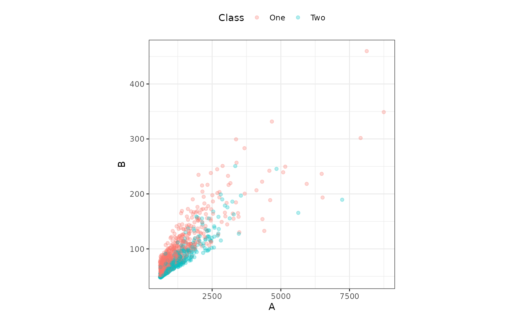
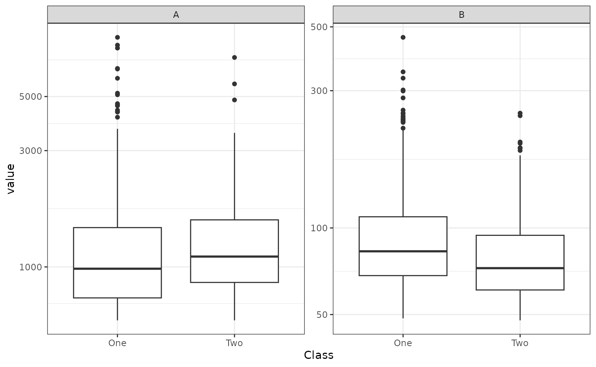
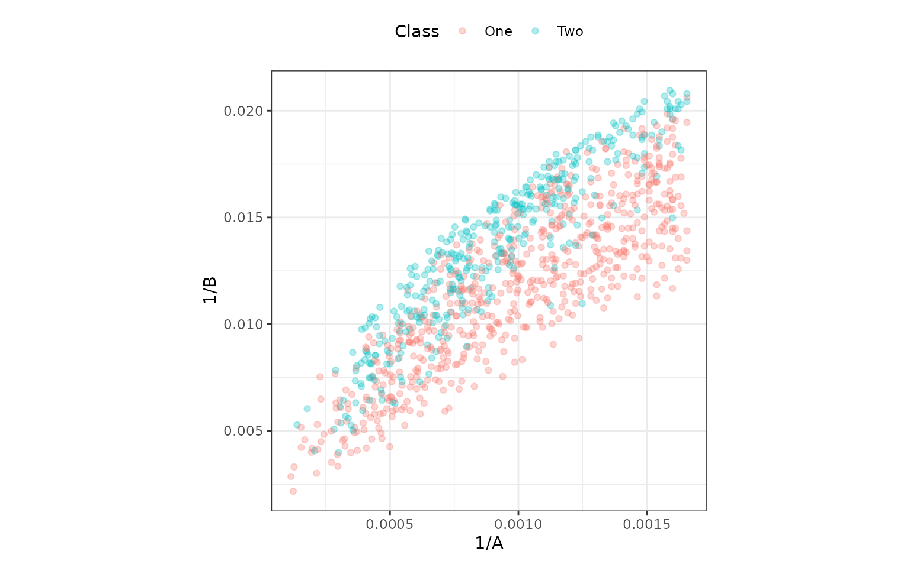

This is an example of a fairly realistic interactive data analysis project to demonstrate how workflows can be used.
Introduction
The data are simple: there are two predictors that should be used to differentiate two classes in the outcome.
There are three partitions of the original data: training (n = 1009), validation (n = 300), and testing (n = 710). We will work with the training set the most and use the validation set to compare models during the development process and then use the test set once we think that we have a good algorithm for making predictions.
Here is the training set:
library(workflows)
library(ggplot2)
library(dplyr)
data("bivariate")
ggplot(bivariate_train, aes(x = A, y = B, col = Class)) +
geom_point(alpha = .3) +
coord_equal(ratio = 20)
Both predictors have positive values and their distributions are right-skewed. There seems to be a separation of the classes, but only when the variables are used together. For example, when the predictors are visualized individually, there is little evidence in separation of the classes.
library(tidyr)
bivariate_train %>%
pivot_longer(cols = c(A, B), names_to = "predictor") %>%
ggplot(aes(x = Class, y = value)) +
geom_boxplot() +
facet_wrap(~predictor, scales = "free_y") +
scale_y_log10()
In the first plot above, the separation appears to happen linearly, and a straight, diagonal boundary might do well. We could use glm() directly to create a logistic regression, but we will use the tidymodels infrastructure and start by making a parsnip model object.
This data analysis will involve looking at a few different approaches of representing the two predictors so that we have a high-quality model. We’ll walk though the thought process of this analysis as we go. This will emulate how most data analysis projects happen: an initial approach is taken and then potential steps are attempted to make improvements. There is no pre-defined blueprint to this process and the R4DS diagram summarizes the process nicely.
Since we are going to try different combinations of feature engineering and models, workflows are really useful since you can have one object that contains all of these operations. It helps organize your work instead of having different objects in your workspace that, at some point, have been used in pairs.
A first set of models
The obvious place to start is by adding both predictors as-is into the model:
# Create a workflow with just the model. We will add to this as we go.
glm_workflow <-
workflow() %>%
add_model(logit_mod)
simple_glm <-
glm_workflow %>%
# Add both predictors in
add_formula(Class ~ .) %>%
# Fit the model:
fit(data = bivariate_train)To evaluate this model, the ROC curve will be computed along with its corresponding AUC.
library(yardstick)
#> For binary classification, the first factor level is assumed to be the event.
#> Set the global option `yardstick.event_first` to `FALSE` to change this.
simple_glm_probs <-
predict(simple_glm, bivariate_val, type = "prob") %>%
bind_cols(bivariate_val)
simple_glm_roc <-
simple_glm_probs %>%
roc_curve(Class, .pred_One)
simple_glm_probs %>% roc_auc(Class, .pred_One)
#> # A tibble: 1 x 3
#> .metric .estimator .estimate
#> <chr> <chr> <dbl>
#> 1 roc_auc binary 0.773
autoplot(simple_glm_roc)
This seems reasonable. One potential issue is that the two predictors have a high degree of correlation 0.848, and this might cause some instability in the model.
Since there are two correlated predictors with skewed distributions and strictly positive values, it might be intuitive to use their ratio instead of the pair. We’ll try that next by recycling the initial workflow and just adding a different formula:
ratio_glm <-
glm_workflow %>%
add_formula(Class ~ I(A/B)) %>%
fit(data = bivariate_train)
ratio_glm_probs <-
predict(ratio_glm, bivariate_val, type = "prob") %>%
bind_cols(bivariate_val)
ratio_glm_roc <-
ratio_glm_probs %>%
roc_curve(Class, .pred_One)
ratio_glm_probs %>% roc_auc(Class, .pred_One)
#> # A tibble: 1 x 3
#> .metric .estimator .estimate
#> <chr> <chr> <dbl>
#> 1 roc_auc binary 0.765
autoplot(simple_glm_roc) +
geom_path(
data = ratio_glm_roc,
aes(x = 1 - specificity, y = sensitivity),
col = "#FDE725FF"
)
The original analysis shows a slight edge, but the two models are probably within the experimental noise of one another.
More complex feature engineering
Instead of combining the two predictors, would it help the model if we were to resolve the skewness of the variables? To test this theory, one option would be to use the Box-Cox transformation on each predictor individually to see if it recommends a nonlinear transformation. The transformation can encode a variety of different functions including the log transform, square root, inverse, and fractional transformations in-between these.
This cannot be easily done via the formula interface, so a recipe is used. A recipe is a list of sequential data processing steps that are conducted before the data are used in a model. For example, to use the Box-Cox method, a simple recipe would be:
library(recipes)
trans_recipe <-
recipe(Class ~ ., data = bivariate_train) %>%
step_BoxCox(all_predictors())Creating the recipe only makes an object with the instructions; it does not carry out the instructions (e.g. estimate the transformation parameter). The general process to use a recipe with a model would be to:
Now we have all of the ingredients to execute the data pre-processing. To get the pre-processed version of the training set, juice() can be used to return a data frame with the transformed predictors, and these can be passed on to fit().
workflows eliminates the multiple steps between creating the recipe and getting the fitted model. Internally, it prepares the recipe so that you don’t have to:
trans_glm <-
glm_workflow %>%
add_recipe(trans_recipe) %>%
fit(data = bivariate_train)
trans_glm_probs <-
predict(trans_glm, bivariate_val, type = "prob") %>%
bind_cols(bivariate_val)
trans_glm_roc <-
trans_glm_probs %>%
roc_curve(Class, .pred_One)
trans_glm_probs %>% roc_auc(Class, .pred_One)
#> # A tibble: 1 x 3
#> .metric .estimator .estimate
#> <chr> <chr> <dbl>
#> 1 roc_auc binary 0.815
autoplot(simple_glm_roc) +
geom_path(
data = ratio_glm_roc,
aes(x = 1 - specificity, y = sensitivity),
col = "#FDE725FF"
) +
geom_path(
data = trans_glm_roc,
aes(x = 1 - specificity, y = sensitivity),
col = "#21908CFF"
)
That is a potential, if not slight, improvemement.
The Box-Cox procedure recommended transformations that are pretty close to the inverse.
The model above creates a class boundary for these data:
ggplot(bivariate_train, aes(x = 1/A, y = 1/B, col = Class)) +
geom_point(alpha = .3) +
coord_equal(ratio = 1/12)
The correlation between these is about the same as in the original data. It might help the model to de-correlate them, and the standard technique for this is principal component analysis. A recipe step can be added that will conduct PCA and return the score values. The scores, instead of the original predictors, can then be used in the model. PCA chases variability, so it is important to normalize the two predictors so that they have the same units. Traditionally, each column could be centered and scaled. For this reason, a step is used prior to PCA that normalizes the two predictors.
pca_recipe <-
trans_recipe %>%
step_normalize(A, B) %>%
step_pca(A, B, num_comp = 2)
pca_glm <-
glm_workflow %>%
add_recipe(pca_recipe) %>%
fit(data = bivariate_train)
pca_glm_probs <-
predict(pca_glm, bivariate_val, type = "prob") %>%
bind_cols(bivariate_val)
pca_glm_roc <-
pca_glm_probs %>%
roc_curve(Class, .pred_One)
pca_glm_probs %>% roc_auc(Class, .pred_One)
#> # A tibble: 1 x 3
#> .metric .estimator .estimate
#> <chr> <chr> <dbl>
#> 1 roc_auc binary 0.815These results are almost identical to the transformed model.
A different model
Let’s try a flexible discriminant analysis model (with MARS functions) using the discrim package. Would a different model work better?
library(discrim)
discrim_mod <-
discrim_flexible() %>%
set_engine("earth") %>%
set_mode("classification")
discrim_wflow <-
workflow() %>%
add_recipe(trans_recipe) %>%
add_model(discrim_mod) %>%
fit(data = bivariate_train)
discrim_probs <-
predict(discrim_wflow, bivariate_val, type = "prob") %>%
bind_cols(bivariate_val)
discrim_roc <-
discrim_probs %>%
roc_curve(Class, .pred_One)
discrim_probs %>% roc_auc(Class, .pred_One)
#> # A tibble: 1 x 3
#> .metric .estimator .estimate
#> <chr> <chr> <dbl>
#> 1 roc_auc binary 0.813Not this one, at least.
The test set
Based on these results, the model with the logistic regression model with inverse terms is probably our best bet. Using the test set:
test_probs <-
predict(trans_glm, bivariate_test, type = "prob") %>%
bind_cols(bivariate_test)
test_roc <-
test_probs %>%
roc_curve(Class, .pred_One)
# A little more optimistic than the validation set
test_probs %>% roc_auc(Class, .pred_One)
#> # A tibble: 1 x 3
#> .metric .estimator .estimate
#> <chr> <chr> <dbl>
#> 1 roc_auc binary 0.862
autoplot(simple_glm_roc)